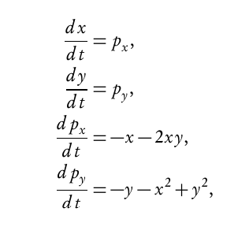
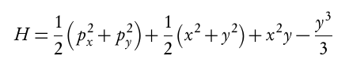
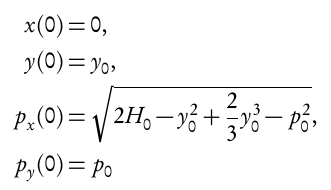

The goal is to obtain the orbit of a star with different initial conditions.
First: Integrate the equations of motion using Runge-Kutta.

Second:
Since the energy equation is conserved, it can be used to
calculate the error.
I don't implement this; I use an iteration limit.
An initial energy H0 is used to calculate the initial value
for momentum in the x-direction.

Third: The equations for the initial conditions. Momentum in the x-direction is calculated from the other initial conditions.
